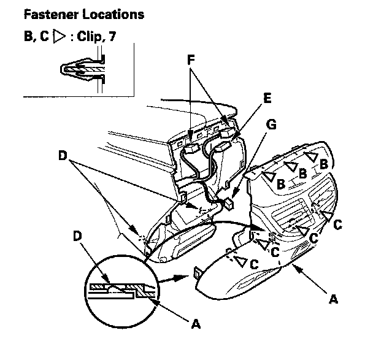

Center Console Rear Trim
Center Console Rear Trim Removal/InstallationSpecial Tools Required
KTC trim tool set SOJATP2014 *
* Available through the American Honda Tool and Equipment Program
NOTE:
- Use the appropriate tool from the KTC trim tool set to avoid damage when removing components.
- Take care not to scratch the center console and related parts.

1. Starting at the top, gently pull out the console rear trim (A) to detach the clips (B), then pull out the trim to detach the remaining clips (C), and to release the lower tabs (D), disconnect the connectors, then remove the trim:
- Rear heater-A/C passenger's control panel-unit connector (E)
- With second row seat heater: Second row seat heater switch connectors (F)
- Without rear entertainment system: Accessory power socket connector (G)
- With rear entertainment system: Auxiliary jack connector (G)
2. Install the trim in the reverse order of removal, and note these items:
- Make sure all connectors are plugged in properly.
- If the clips are damaged or stress-whitened, replace them with new ones.
- Push the clips into place securely.